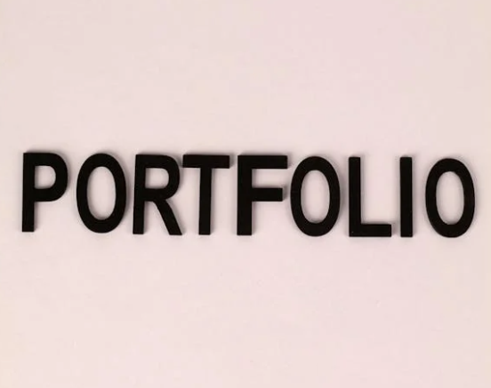

About me
Hi! I am MUZNA YUMMAN, an accomplished masters student with a robust foundation in mathematics and computational skills. My master’s research focused on asymmetric cryptography, resulting in a successful publication in an international journal “Symmetry,” MDPI (IF: 2.713). I am passionate about exploring the mathematical aspect in computer science and information technology. Simultaneously, I am an enthusiastic participant in hackathons and thoroughly enjoy engaging in coding competitions. I have take on the role of a team lead in three international hackathons, and have also served as a section leader in Stanford Code in Place 2023 and 2024. Additionally, I have actively taken part in numerous badminton tournaments and have even led a decoration team within a university club.
My key strengths include:
- Applied and Pure Mathematics
- Cryptographic protocols
- Data Structures and Algorithms
- Object-Oriented Programming Language
- Data Analysis/Machine Learning
Work Experience
Pyton and DSA instructor at iCodeGuru
- Assisted to 100+ students in improving their coding skills.
- Taught Python and its libraries (NumPy, SciPy, Matplotlib, Pandas).
- Worked on developing students problem-solving skills through leetcode problems and built their habit of writing optimize codes.
- Worked as trainer of IELTS and GRE courses.
- Taught a section of 15 international students in the "Code in Place" program offered by Stanford University.
- Helping them in grasping the concepts covered in weekly lectures.
Achievements
| Awards |
Year |
| MS Fellowship” and “Merit Scholarship for Undergraduate |
2018 |
| Prime Minister Laptop Scheme” in undergraduate |
2015 |
Feedback